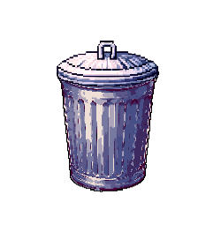

Valentino
Aruan

I am a software engineering student at Sepuluh Nopember Institute of Technology, focusing on software development. Beyond my studies, I have a strong interest in 3D design, where I channel my creativity through digital visualization. Progressive house music is an essential part of my daily routine, providing inspiration and energy for every project I undertake. By combining technology, design, and music, I strive to bring innovation to every step I take.
Curriculum Vitae2023 - Present:
Sepuluh Nopember Institute of Technology
Catch The Rubbish is an interactive game designed to raise awareness about the importance of proper waste disposal. This project aims to engage users in a fun and educational way, encouraging people to always dispose of trash in the appropriate place.
